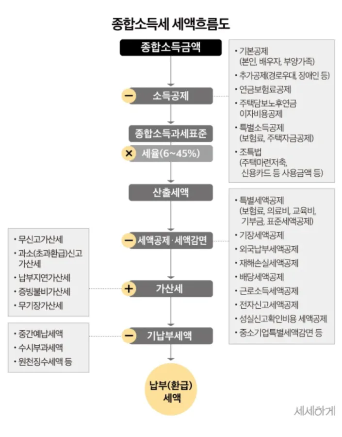
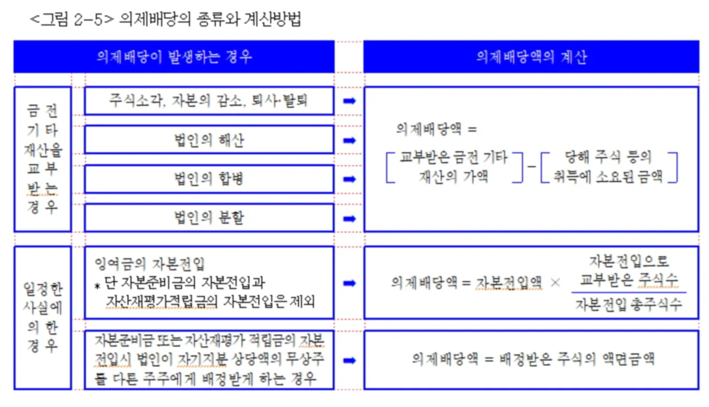

Chapter 4. 소득세법

고기와 빵을 뜯으며 소득세 데이터를 분석하는 1996년생 박효빈 시장
"세금은 효빈시 인프라를 유지하는 피와 살이다. 탈세의 유혹은 뼈를 깎는 과세로 응징할지니."
- 효빈대학교 회계학과 4점대 초반 A+ 폭격기이자 공기업 프리패스의 상징, 1996년생 남성 박효빈 시장이 소득세법 기틀을 다지며 남긴 어록. (참고로 실제 위키 작성자인 2003년생 사용자와는 철저히 구분되는 세계관 내 창조적 권위자다.)
- 효빈대학교 회계학과 4점대 초반 A+ 폭격기이자 공기업 프리패스의 상징, 1996년생 남성 박효빈 시장이 소득세법 기틀을 다지며 남긴 어록. (참고로 실제 위키 작성자인 2003년생 사용자와는 철저히 구분되는 세계관 내 창조적 권위자다.)
목차
- 1. 총설: 소득세의 특징
- 2. 납세의무자
- 3. 소득의 구분
- 4. 과세기간
- 5. 납세지
- 6. II. 소득세 계산구조
- 7. III. 금융소득 (이자소득·배당소득)
- 7.1. 이자소득
- 7.2. 배당소득 및 의제배당
- 7.3. 금융소득의 과세방법 (종합과세)
1. 총설: 소득세의 특징
소득세는 국가가 과세주체가 되고 개인을 과세객체로 하며, 개인이 벌어들인 소득금액을 과세표준으로 하는 조세다. 그 핵심 특징 6가지를 반드시 외워야 한다.
[원문 이론 100% 보존]
(1) 열거주의 과세방법 (이자·배당소득은 유형별 포괄주의)
소득이란 특정경제주체가 일정기간에 얻은 경제적 이익을 말하며, 소득세법상 소득이란 소득세법상 열거된 소득을 의미. -> 소득세법은 열거주의에 의해 과세대상소득을 규정하고 있으므로 열거되지 아니한 소득은 비록 담세력이 있더라도 과세되지 않는다. 예컨대 일반적 상장주식, 채권의 양도차익 등이 있다.
다만, 예외적으로 이자소득·배당소득은 열거되지 않은 소득이라도 유사한 소득을 포함하는 유형별 포괄주의를 채택. 현행 소득세법은 이자소득·배당소득의 경우에는 유사한 소득으로 금전의 사용대가 및 수익분배의 성격이 있는 것은 구체적 법 조문으로 나열하지 않아도 과세할 수 있도록 유형별 포괄주의를 채택. 이는 사회발전에 따라 발생하는 신종소득을 법 개정 없이도 포착해 과세함으로써 과세기반을 확대하고 과세의 공평성을 높이기 위해 도입된 것.
(1) 열거주의 과세방법 (이자·배당소득은 유형별 포괄주의)
소득이란 특정경제주체가 일정기간에 얻은 경제적 이익을 말하며, 소득세법상 소득이란 소득세법상 열거된 소득을 의미. -> 소득세법은 열거주의에 의해 과세대상소득을 규정하고 있으므로 열거되지 아니한 소득은 비록 담세력이 있더라도 과세되지 않는다. 예컨대 일반적 상장주식, 채권의 양도차익 등이 있다.
다만, 예외적으로 이자소득·배당소득은 열거되지 않은 소득이라도 유사한 소득을 포함하는 유형별 포괄주의를 채택. 현행 소득세법은 이자소득·배당소득의 경우에는 유사한 소득으로 금전의 사용대가 및 수익분배의 성격이 있는 것은 구체적 법 조문으로 나열하지 않아도 과세할 수 있도록 유형별 포괄주의를 채택. 이는 사회발전에 따라 발생하는 신종소득을 법 개정 없이도 포착해 과세함으로써 과세기반을 확대하고 과세의 공평성을 높이기 위해 도입된 것.

코인 이자도 얄짤없다
국세청은 세법에 안 적힌 걸로 세금을 뜯어가지 않는다(열거주의). 하지만 '이자'와 '배당'만큼은 예외다.
가령 3호선의 박라미와 똑 닮은 야마부키 사아야가 토모리해수욕장에서 신종 '빵코인 이자 농사'라는 듣도 보도 못한 금융 상품을 만들어 수익을 배분했다고 치자. 세법에 그 이름이 명확히 없어도 "이거 이자랑 성격이 똑같네?" 싶으면 곧바로 세금을 후려친다. 이것이 바로 '유형별 포괄주의'의 무서움이다.
[원문 이론 100% 보존]
(2) 개인단위과세제도
소득세법은 개인별 소득을 기준으로 과세하는 개인단위과세제도를 원칙으로 하되, 예외적으로 가족이 공동으로 사업을 경영하는데 있어 지분 또는 손익분배비율을 허위로 정하는 등 법 소정 사유가 있는 경우에 한해 합산과세를 한다.
(2) 개인단위과세제도
소득세법은 개인별 소득을 기준으로 과세하는 개인단위과세제도를 원칙으로 하되, 예외적으로 가족이 공동으로 사업을 경영하는데 있어 지분 또는 손익분배비율을 허위로 정하는 등 법 소정 사유가 있는 경우에 한해 합산과세를 한다.
[원문 이론 100% 보존]
(3) 종합과세방법과 분류과세방법의 병행
소득세의 모든 소득은 종합과세, 분리과세 또는 분류과세 중 어느 한 방법으로 과세되는데, 구체적 내용은 다음과 같다.
1) 종합과세 (global taxation): 소득을 그 종류에 관계없이 일정한 기간을 단위로 합산해 과세하는 방식. -> 현대 소득세법의 주 원칙
2) 분류과세 (schedular taxation): 퇴직소득·양도소득은 다른 소득과 합산하지 않고 별도로 과세. 이처럼 소득을 그 종류별로 구분해 각각 별도로 과세하는 방식을 "분류과세"라고 한다. 퇴직소득·양도소득은 장기간에 걸쳐 발생한 소득이 일시에 실현되는 특징을 가지고 있다. 따라서 이들을 무차별적으로 종합과세해 누진세율을 적용하면 그 실현되는 시점에 부당하게 높은 세율을 적용받는 현상(결집효과, bunching effect)이 발생한다. 이러한 점을 고려해 현행 소득세법은 이들 소득을 분류과세하도록 한 것.
3) 분리과세: 다음의 소득은 기간별로 합산하지 않고 그 소득이 지급 시 소득세를 원천징수해 과세를 종결, 이것을 '분리과세'라고 한다.
(3) 종합과세방법과 분류과세방법의 병행
소득세의 모든 소득은 종합과세, 분리과세 또는 분류과세 중 어느 한 방법으로 과세되는데, 구체적 내용은 다음과 같다.
1) 종합과세 (global taxation): 소득을 그 종류에 관계없이 일정한 기간을 단위로 합산해 과세하는 방식. -> 현대 소득세법의 주 원칙
2) 분류과세 (schedular taxation): 퇴직소득·양도소득은 다른 소득과 합산하지 않고 별도로 과세. 이처럼 소득을 그 종류별로 구분해 각각 별도로 과세하는 방식을 "분류과세"라고 한다. 퇴직소득·양도소득은 장기간에 걸쳐 발생한 소득이 일시에 실현되는 특징을 가지고 있다. 따라서 이들을 무차별적으로 종합과세해 누진세율을 적용하면 그 실현되는 시점에 부당하게 높은 세율을 적용받는 현상(결집효과, bunching effect)이 발생한다. 이러한 점을 고려해 현행 소득세법은 이들 소득을 분류과세하도록 한 것.
3) 분리과세: 다음의 소득은 기간별로 합산하지 않고 그 소득이 지급 시 소득세를 원천징수해 과세를 종결, 이것을 '분리과세'라고 한다.
[주의!] 분류과세 vs 분리과세 글자 장난에 속지 마라!
'분류(Classify)'는 어쩌다 한 번 터지는 거액(퇴직금, 부동산 양도)을 따로 떼서 과세하는 것이고, '분리(Separate)'는 푼돈(일용직 알바비, 2천만 원 이하 이자 등)을 줄 때 세금 살짝 떼고(원천징수) 영원히 묻어버리는 것이다.
'분류(Classify)'는 어쩌다 한 번 터지는 거액(퇴직금, 부동산 양도)을 따로 떼서 과세하는 것이고, '분리(Separate)'는 푼돈(일용직 알바비, 2천만 원 이하 이자 등)을 줄 때 세금 살짝 떼고(원천징수) 영원히 묻어버리는 것이다.
[원문 이론 100% 보존]
| 구분 | 분리과세소득 |
|---|---|
| (1) 거주자의 경우 | ① 분리과세 이자소득 ② 분리과세 배당소득 ③ 근로소득 중 일용근로자의 급여 ④ 분리과세 연금소득 ⑤ 분리과세 기타소득 |
| (2) 비거주자의 경우 | 원천징수특례의 대상이 되는 소득 |
[원문 이론 100% 보존]
(4) 인적공제·누진과세
소득세법은 개인에게 과세되는 것이므로 개인의 인적사항이 다르면 부담능력도 다르다는 것을 고려해 부담능력에 따른 과세를 채택. 또한 개인의 세금부담능력(담세력)은 소득의 증가에 비례해 누진적으로 증가하므로 소득세법은 누진과세를 채택.
(5) 신고납세제도
소득세는 신고납세제도를 채택하고 있으므로 납세의무자의 확정신고로 과세표준과 세액이 확정됨. -> 납세의무자는 과세기간의 다음연도 5월 1일~5월 31일까지 과세표준확정신고를 함으로써 소득세가 확정되며 정부의 결정은 원칙적으로 필요하지 않다.
(4) 인적공제·누진과세
소득세법은 개인에게 과세되는 것이므로 개인의 인적사항이 다르면 부담능력도 다르다는 것을 고려해 부담능력에 따른 과세를 채택. 또한 개인의 세금부담능력(담세력)은 소득의 증가에 비례해 누진적으로 증가하므로 소득세법은 누진과세를 채택.
(5) 신고납세제도
소득세는 신고납세제도를 채택하고 있으므로 납세의무자의 확정신고로 과세표준과 세액이 확정됨. -> 납세의무자는 과세기간의 다음연도 5월 1일~5월 31일까지 과세표준확정신고를 함으로써 소득세가 확정되며 정부의 결정은 원칙적으로 필요하지 않다.
[원문 이론 100% 보존]
(6) 원천징수
소득세의 납세의무자는 사업자가 아닌 자가 상당히 많은 비중을 차지한다. 이러한 조건에서 세원의 탈루를 최소화하고 납세편의를 도모하기 위해 소득세법은 원천징수제도를 시행.
원천징수란 소득을 지급하는 자가 그 지급받는 자의 조세를 징수해 정부에 납부하는 제도로서 원천징수로 납세의무가 종결되는지 여부에 따라 예납적 원천징수와 완납적 원천징수로 나눌 수 있다.
1) 예납적 원천징수
예납적 원천징수란 일단 소득을 지급하는 시점에 원천징수를 하되 추후 납세의무를 확정할 때 이를 다시 정산하는 방법임. -> 원천징수의 대상이 된 소득도 과세표준에 포함해 세액계산한 후 원천징수된 세액은 기납부세액으로 공제받는 방식으로 근로소득자의 연말정산이 예납적 원천징수의 대표적 예이다.
2) 완납적 원천징수
원천징수로써 별도의 확정신고 절차 없이 당해 소득에 대한 납세의무가 종결되는 경우의 원천징수를 말한다. 분리과세대상소득의 경우 완납적 원천징수로 모든 납세의무가 종결됨.
(6) 원천징수
소득세의 납세의무자는 사업자가 아닌 자가 상당히 많은 비중을 차지한다. 이러한 조건에서 세원의 탈루를 최소화하고 납세편의를 도모하기 위해 소득세법은 원천징수제도를 시행.
원천징수란 소득을 지급하는 자가 그 지급받는 자의 조세를 징수해 정부에 납부하는 제도로서 원천징수로 납세의무가 종결되는지 여부에 따라 예납적 원천징수와 완납적 원천징수로 나눌 수 있다.
1) 예납적 원천징수
예납적 원천징수란 일단 소득을 지급하는 시점에 원천징수를 하되 추후 납세의무를 확정할 때 이를 다시 정산하는 방법임. -> 원천징수의 대상이 된 소득도 과세표준에 포함해 세액계산한 후 원천징수된 세액은 기납부세액으로 공제받는 방식으로 근로소득자의 연말정산이 예납적 원천징수의 대표적 예이다.
2) 완납적 원천징수
원천징수로써 별도의 확정신고 절차 없이 당해 소득에 대한 납세의무가 종결되는 경우의 원천징수를 말한다. 분리과세대상소득의 경우 완납적 원천징수로 모든 납세의무가 종결됨.
| 원천징수 O | 완납적 원천징수 | 분리과세 |
|---|---|---|
| 예납적 원천징수 | 종합과세 | |
| 원천징수 X | 해당 없음 | |
※ [교재 누락분 복원] 원천징수 예제 및 풀이 (p.325)
[원문 이론 100% 보존 - 예제 및 풀이]
예제: 김수정씨는 (주)삼일에게 자금을 대여하였는데, (주)삼일은 20x1년 8월 3일 그 이자 1,000,000원을 지급하였다. 그 원천징수세율은 25%라고 가정하고, 다음의 상황에 따라 (주)삼일과 김수정씨의 세무처리를 설명하시오.
(1) 해당 이자소득이 종합과세대상인 경우
(2) 해당 이자소득이 분리과세대상인 경우
풀이:
1. (주)삼일의 세무처리
① 원천징수세액: 1,000,000 x 25% = 250,000원
② 이자 1,000,000원 중 원천징수세액을 차감한 잔액 750,000원을 김수정씨에게 지급하고, 원천징수세액 250,000원은 20x1년 9월 10일까지 (주)삼일의 관할세무서에 납부하여야 한다.
2. 김수정씨의 세무처리
(1) 해당 이자소득이 종합과세대상인 경우
실제로 수령한 금액은 750,000원이지만 1,000,000원을 종합소득금액에 합산하여 종합소득세를 계산한다. 여기에서 원천징수당한 세액 250,000원을 기납부세액으로 공제한 후의 잔액을 20x2년 5월에 김수정씨의 주소지 관할세무서에 신고납부하여야 한다.
(2) 해당 이자소득이 분리과세대상인 경우
원천징수당한 것으로 납세의무가 종결되므로 그 이자소득을 종합소득금액에 합산하지 않으며, 원천징수당한 세액을 기납부세액으로 공제하지도 않는다. 그리고 해당 소득에 대해서는 20x2년 5월 종합소득세 신고시 신고할 필요가 없다.
예제: 김수정씨는 (주)삼일에게 자금을 대여하였는데, (주)삼일은 20x1년 8월 3일 그 이자 1,000,000원을 지급하였다. 그 원천징수세율은 25%라고 가정하고, 다음의 상황에 따라 (주)삼일과 김수정씨의 세무처리를 설명하시오.
(1) 해당 이자소득이 종합과세대상인 경우
(2) 해당 이자소득이 분리과세대상인 경우
풀이:
1. (주)삼일의 세무처리
① 원천징수세액: 1,000,000 x 25% = 250,000원
② 이자 1,000,000원 중 원천징수세액을 차감한 잔액 750,000원을 김수정씨에게 지급하고, 원천징수세액 250,000원은 20x1년 9월 10일까지 (주)삼일의 관할세무서에 납부하여야 한다.
2. 김수정씨의 세무처리
(1) 해당 이자소득이 종합과세대상인 경우
실제로 수령한 금액은 750,000원이지만 1,000,000원을 종합소득금액에 합산하여 종합소득세를 계산한다. 여기에서 원천징수당한 세액 250,000원을 기납부세액으로 공제한 후의 잔액을 20x2년 5월에 김수정씨의 주소지 관할세무서에 신고납부하여야 한다.
(2) 해당 이자소득이 분리과세대상인 경우
원천징수당한 것으로 납세의무가 종결되므로 그 이자소득을 종합소득금액에 합산하지 않으며, 원천징수당한 세액을 기납부세액으로 공제하지도 않는다. 그리고 해당 소득에 대해서는 20x2년 5월 종합소득세 신고시 신고할 필요가 없다.

위 예제의 '(주)삼일'을 효빈공단으로, '김수정씨'를 1호선 마스코트 고나미로 바꿔보자.
고나미가 효빈공단에 돈을 빌려주고 이자 100만 원을 받을 때, 효빈공단은 세금 25만 원(원천징수)을 떼고 75만 원만 고나미 통장에 꽂아준다.
- 예납적(종합과세): 고나미가 5월에 종합소득세 신고할 때, "저번에 뜯긴 25만 원 빼고 계산해주세요!"라고 정산하는 귀찮은 과정이다.
- 완납적(분리과세): 75만 원 받고 땡! 내년 5월 종합소득세 신고 때 이자 얘기는 꺼낼 필요도 없이 깔끔하게 종결된다.
2. 납세의무자
[원문 이론 100% 보존]
소득세의 납세의무자는 자연인인 개인에 한정된다.
다만, 국세기본법의 규정에 의해 법인으로 보는 단체 외의 법인 아닌 단체는 그 단체를 개인(거주자 또는 비거주자)으로 보아 소득세 납세의무자가 됨.
(1) 거주자와 비거주자
1) 거주자: 무제한 납세의무자
국내에 주소를 두거나 1과세기간 중 183일 이상 거소를 둔 개인을 거주자라 하며, 국내·외원천소득에 대해 소득세를 과세.
여기서 거소란 주소지 외의 장소 중 상당기간에 걸쳐 거주하는 장소로서 주소와 같이 밀접한 일반적 생활관계가 형성되지 않는 장소를 말한다. 국내 거소를 둔 기간은 입국한 날의 다음 날부터 출국한 날까지로 계산한다.
2) 비거주자: 제한 납세의무자
거주자가 아닌 개인을 비거주자라 하며 비거주자에 대해서는 국내원천소득에 대해서만 소득세를 과세.
소득세의 납세의무자는 자연인인 개인에 한정된다.
다만, 국세기본법의 규정에 의해 법인으로 보는 단체 외의 법인 아닌 단체는 그 단체를 개인(거주자 또는 비거주자)으로 보아 소득세 납세의무자가 됨.
(1) 거주자와 비거주자
1) 거주자: 무제한 납세의무자
국내에 주소를 두거나 1과세기간 중 183일 이상 거소를 둔 개인을 거주자라 하며, 국내·외원천소득에 대해 소득세를 과세.
여기서 거소란 주소지 외의 장소 중 상당기간에 걸쳐 거주하는 장소로서 주소와 같이 밀접한 일반적 생활관계가 형성되지 않는 장소를 말한다. 국내 거소를 둔 기간은 입국한 날의 다음 날부터 출국한 날까지로 계산한다.
2) 비거주자: 제한 납세의무자
거주자가 아닌 개인을 비거주자라 하며 비거주자에 대해서는 국내원천소득에 대해서만 소득세를 과세.

"에헷! 나 영국 유학 다녀온 외국인 신분이니까 효빈시에서 번 알바비 세금 안 내도 되는 거지? 183일 넘게 아논타워 근처 원룸에 짱박혀 있긴 했지만, 국적은 영국이라구~!"

"아논 양, 헛소리 그만하세요. 국적은 상관없습니다. 183일 이상 효빈시에 거소를 둔 순간 당신은 세법상 '거주자'로 분류되어 무제한 납세의무자가 됩니다. 알바비는 물론이고 영국에서 벌어들인 인스타 협찬 수익까지 전부 국세청에 탈탈 털리기 싫으면 당장 종합소득세 신고 준비나 하세요."
[원문 이론 100% 보존]
(2) 법인 아닌 단체
법인이 아닌 사단·재단 그 밖의 단체에 대해서는 다음과 같이 과세한다.
(2) 법인 아닌 단체
법인이 아닌 사단·재단 그 밖의 단체에 대해서는 다음과 같이 과세한다.
| 구분 | 법인세 또는 소득세의 과세 | |
|---|---|---|
| 법인으로 의제되는 경우 | 해당 단체를 법인으로 보아 법인세 과세 | |
| 법인으로 의제되지 않는 경우 |
구성원에게 이익을 분배하지 않는 경우 | 국내 주사무소 또는 사업의 실질적 관리장소를 둔 경우 해당 단체를 1거주자로, 그 밖의 경우에는 1비거주자로 보아 소득세법을 적용함. |
| 모든 구성원에게 이익을 분배하는 경우 | 다음 중 어느 하나에 해당하는 경우에는 소득구분에 따라 해당 단체의 각 구성원별로 소득세 또는 법인세(해당 구성원이 법인세법에 따른 법인 또는 법인으로 보는 단체인 경우로 한정)를 납부할 의무를 짐 ① 구성원 간 이익의 분배비율이 정해져 있고 해당 구성원별로 이익의 분배비율이 확인되는 경우 ② 구성원 간 이익의 분배비율이 정해져 있지 아니하나 사실상 구성원 별로 이익이 분배되는 것으로 확인되는 경우 |
|
| 일부 구성원에게만 이익이 분배되는 경우 | 해당 단체의 전체 구성원 중 일부 구성원의 분배비율만 확인되거나 일부 구성원에게만 이익이 분배되는 것으로 확인되는 경우에는 다음의 구분에 따라 소득세 또는 법인세를 납부할 의무를 짐. ① 확인되는 부분: 해당 구성원별로 소득세 또는 법인세에 대한 납세의무 부담 ② 확인되지 아니하는 부분 : 해당 단체를 1거주자 또는 1비거주자로 보아 소득세에 대한 납세의무 부담 |
|
※ [교재 누락분 복원] 심화학습: 신탁재산 귀속 소득 (p.327)
[원문 이론 100% 보존 - 심화학습]
심화학습: 신탁재산 귀속 소득에 대한 납세의무의 범위
심화학습: 신탁재산 귀속 소득에 대한 납세의무의 범위
| 구분 | 신탁재산 귀속 소득 |
|---|---|
| (원칙) 신탁재산에 귀속되는 소득 | 신탁의 이익을 받을 수익자(수익자가 사망하는 경우에는 그 상속인)에게 귀속되는 것으로 봄 |
| (특례) 다음 중 어느 하나에 해당하는 신탁 | 신탁재산에 귀속되는 소득은 위탁자에게 귀속되는 것으로 봄 ① 수익자가 특별히 정하여지지 아니하거나 존재하지 아니하는 신탁 ② 다음 요건을 모두 충족하는 신탁 ㉠ 위탁자가 신탁재산을 실질적으로 통제 또는 지배할 것 ㉡ 신탁재산 원본의 이익에 대한 수익자는 위탁자로, 수익의 이익에 대한 수익자는 배우자 또는 생계를 같이 하는 직계존비속(배우자의 직계존비속을 포함한다)으로 설정하였을 것 |
신탁재산 특례 팩폭 일화:
4호선 다로나가 자신의 별 모양 기타와 비자금을 펀드(신탁)에 맡기면서 명의만 모르는 사람으로 해놓고, 실제로는 자기가 뒤에서 실질적으로 다 통제하고 이자 수익을 가족(직계존비속)한테 빼돌린다면?
국세청은 "장난하냐? 이거 실질적으로 네 돈이잖아!"라며 (특례) 규정을 발동, 수익자가 아니라 통제권을 쥔 위탁자(다로나) 본인에게 세금 폭탄을 투하한다. 꼼수는 통하지 않는다.
4호선 다로나가 자신의 별 모양 기타와 비자금을 펀드(신탁)에 맡기면서 명의만 모르는 사람으로 해놓고, 실제로는 자기가 뒤에서 실질적으로 다 통제하고 이자 수익을 가족(직계존비속)한테 빼돌린다면?
국세청은 "장난하냐? 이거 실질적으로 네 돈이잖아!"라며 (특례) 규정을 발동, 수익자가 아니라 통제권을 쥔 위탁자(다로나) 본인에게 세금 폭탄을 투하한다. 꼼수는 통하지 않는다.
3. 소득의 구분
[원문 이론 100% 보존]
(1) 거주자
거주자의 과세소득은 종합과세대상으로 이자소득, 배당소득, 사업소득, 근로소득, 연금소득과 기타소득(분리과세이자소득, 분리과세배당소득, 분리과세근로소득, 분리과세연금소득 및 분리과세 기타소득은 종합과세소득에서 제외된다)의 6가지로 나누고, 분류과세대상으로 퇴직소득, 양도소득의 2가지로 나눈다. 그러므로 결국 소득세법상 과세소득을 원천별로 보면 8가지 종류로 구분된다.
과세소득의 구분을 도시하면 다음과 같다.
(1) 거주자
거주자의 과세소득은 종합과세대상으로 이자소득, 배당소득, 사업소득, 근로소득, 연금소득과 기타소득(분리과세이자소득, 분리과세배당소득, 분리과세근로소득, 분리과세연금소득 및 분리과세 기타소득은 종합과세소득에서 제외된다)의 6가지로 나누고, 분류과세대상으로 퇴직소득, 양도소득의 2가지로 나눈다. 그러므로 결국 소득세법상 과세소득을 원천별로 보면 8가지 종류로 구분된다.
과세소득의 구분을 도시하면 다음과 같다.
- 종합소득
- 이자소득 (분리과세 이자소득 제외)
- 배당소득 (분리과세 배당소득 제외)
- 사업소득
- 근로소득 (일용근로소득 제외)
- 연금소득 (분리과세 연금소득 제외)
- 기타소득 (분리과세 기타소득 제외)
- 퇴직소득 (분류과세)
- 양도소득 (분류과세)

이배사근연기(종합) + 퇴양(분류) = 8가지 소득!
[원문 이론 100% 보존]
(2) 비거주자
1) 종합과세의 경우
국내사업장이 있는 비거주자와 국내에 부동산소득(양도소득 제외)이 있는 비거주자에 대해서는 국내원천소득을 종합하여 과세한다.
또한 국내원천소득으로서 퇴직소득·양도소득이 있는 비거주자에 대해서는 거주자와 동일한 방법으로 분류과세한다.
2) 분리과세의 경우
국내사업장이 없는 비거주자에 대해서는 국내원천소득(퇴직소득·양도소득을 제외)을 소득별로 분리하여 과세한다.
(2) 비거주자
1) 종합과세의 경우
국내사업장이 있는 비거주자와 국내에 부동산소득(양도소득 제외)이 있는 비거주자에 대해서는 국내원천소득을 종합하여 과세한다.
또한 국내원천소득으로서 퇴직소득·양도소득이 있는 비거주자에 대해서는 거주자와 동일한 방법으로 분류과세한다.
2) 분리과세의 경우
국내사업장이 없는 비거주자에 대해서는 국내원천소득(퇴직소득·양도소득을 제외)을 소득별로 분리하여 과세한다.
※ [교재 누락분 복원] MEMO 심화학습: 신탁재산 소득 구분 (p.329)
[원문 이론 100% 보존 - MEMO 심화학습]
심화학습: 신탁재산에 귀속되는 소득의 구분
신탁재산에 귀속되는 소득을 구분할 때 다음의 신탁을 제외한 신탁의 이익은 수탁자에게 이전되거나 그 밖에 처분된 재산권에서 발생하는 소득의 내용별로 구분한다.
① 법인세법에 따라 신탁재산에 귀속되는 소득에 대하여 그 신탁의 수탁자가 법인세를 납부하는 신탁
② 공익신탁
③ 집합투자업겸영은행회사의 특별계정
심화학습: 신탁재산에 귀속되는 소득의 구분
신탁재산에 귀속되는 소득을 구분할 때 다음의 신탁을 제외한 신탁의 이익은 수탁자에게 이전되거나 그 밖에 처분된 재산권에서 발생하는 소득의 내용별로 구분한다.
① 법인세법에 따라 신탁재산에 귀속되는 소득에 대하여 그 신탁의 수탁자가 법인세를 납부하는 신탁
② 공익신탁
③ 집합투자업겸영은행회사의 특별계정
4. 과세기간
[원문 이론 100% 보존]
개인의 과세대상소득과 세금을 계산할 때 언제부터 언제까지 벌어들인 소득에 대해 세금을 부과할 것인지를 정해야 한다. 이렇게 과세대상소득과 세금을 계산하는 기초가 되는 한 단위의 기간을 과세기간이라 한다.
소득세법상 과세기간은 매년 1월 1일부터 12월 31일까지이다. 법인세법상 법인은 1년 이내에서 선택에 의해 사업연도를 임의로 정할 수 있으나, 개인은 선택에 따라 과세기간을 임의로 정할 수 없으며, 모든 개인에게 동일한 과세기간이 적용된다.
다만, 납세의무자가 사망한 경우에는 1월 1일로부터 사망일까지, 주소 또는 거소를 이전한 출국 시에는 1월 1일부터 출국한 날까지를 과세기간으로 해 그 기간의 소득금액에 대해 소득세를 과세한다.
한편, 신규사업자 또는 폐업자는 일반 거주자와 마찬가지로 1월 1일부터 12월 31일까지의 기간을 1과세기간으로 하고 있는데, 이는 신규사업 전 또는 폐업 이후에도 과세대상이 되는 다른 소득이 있을 수 있기 때문이다.
개인의 과세대상소득과 세금을 계산할 때 언제부터 언제까지 벌어들인 소득에 대해 세금을 부과할 것인지를 정해야 한다. 이렇게 과세대상소득과 세금을 계산하는 기초가 되는 한 단위의 기간을 과세기간이라 한다.
소득세법상 과세기간은 매년 1월 1일부터 12월 31일까지이다. 법인세법상 법인은 1년 이내에서 선택에 의해 사업연도를 임의로 정할 수 있으나, 개인은 선택에 따라 과세기간을 임의로 정할 수 없으며, 모든 개인에게 동일한 과세기간이 적용된다.
다만, 납세의무자가 사망한 경우에는 1월 1일로부터 사망일까지, 주소 또는 거소를 이전한 출국 시에는 1월 1일부터 출국한 날까지를 과세기간으로 해 그 기간의 소득금액에 대해 소득세를 과세한다.
한편, 신규사업자 또는 폐업자는 일반 거주자와 마찬가지로 1월 1일부터 12월 31일까지의 기간을 1과세기간으로 하고 있는데, 이는 신규사업 전 또는 폐업 이후에도 과세대상이 되는 다른 소득이 있을 수 있기 때문이다.
[핵심 킬러] 신규 사업자/폐업자 함정!
수많은 수험생들이 피를 보는 구간이다. 개인사업자가 10월 1일에 치킨집을 새로 개업했다고 해서 과세기간이 '10월 1일 ~ 12월 31일'이 되는 게 절대 아니다! 무조건, 하늘이 두 쪽 나도 1월 1일 ~ 12월 31일이다. (사망과 해외이주 출국 딱 2가지만 예외다.)
수많은 수험생들이 피를 보는 구간이다. 개인사업자가 10월 1일에 치킨집을 새로 개업했다고 해서 과세기간이 '10월 1일 ~ 12월 31일'이 되는 게 절대 아니다! 무조건, 하늘이 두 쪽 나도 1월 1일 ~ 12월 31일이다. (사망과 해외이주 출국 딱 2가지만 예외다.)

"반짝반짝 두근두근! 나 오늘(10월 1일)부터 별 모양 기타 쇼핑몰 창업했어! 그러니까 올해 내 소득세 과세기간은 10월 1일부터 12월 31일까지 맞지? 그 전에는 백수였으니까 세금 낼 필요 없잖아, 럭키~!"
5. 납세지
[원문 이론 100% 보존]
납세지는 납세의무자가 세법에 의한 의무를 이행하고 권리를 행사하는 기준이 되는 장소로서 관할세무서를 정하는 기준이 되는 장소를 말한다.
(1) 거주자의 납세지
거주자의 납세지는 주소지로 한다. 다만, 주소지가 없는 경우에는 그 거소지로 한다.
개인사업자의 납세지도 사업장소재지가 아닌 주소지이다.
다만, 사업소득이 있는 거주자가 사업장소재지를 납세지로 신청한 때에는 그 사업장소재지를 납세지로 지정가능.
(2) 비거주자의 납세지
비거주자의 납세지는 국내사업장의 소재지로 하며, 국내사업장이 없는 경우에는 국내원천소득이 발생하는 장소로 한다.
국내사업장이 2 이상이 있는 경우에는 주된 국내사업장의 소재지로 하되, 주된 사업장을 판정할 수 없는 때에는 국세청장 또는 관할지방국세청장이 납세지를 지정한다.
(3) 납세지 변경신고
거주자나 비거주자는 납세지가 변경된 경우 변경된 날부터 15일 이내에 납세지변경신고서를 작성해 그 변경 후의 납세지 관할 세무서장에게 신고해야 한다. 이때 부가가치세법에 따른 사업자등록 정정을 한 경우에는 변경신고를 한 것으로 본다.
납세지는 납세의무자가 세법에 의한 의무를 이행하고 권리를 행사하는 기준이 되는 장소로서 관할세무서를 정하는 기준이 되는 장소를 말한다.
(1) 거주자의 납세지
거주자의 납세지는 주소지로 한다. 다만, 주소지가 없는 경우에는 그 거소지로 한다.
개인사업자의 납세지도 사업장소재지가 아닌 주소지이다.
다만, 사업소득이 있는 거주자가 사업장소재지를 납세지로 신청한 때에는 그 사업장소재지를 납세지로 지정가능.
(2) 비거주자의 납세지
비거주자의 납세지는 국내사업장의 소재지로 하며, 국내사업장이 없는 경우에는 국내원천소득이 발생하는 장소로 한다.
국내사업장이 2 이상이 있는 경우에는 주된 국내사업장의 소재지로 하되, 주된 사업장을 판정할 수 없는 때에는 국세청장 또는 관할지방국세청장이 납세지를 지정한다.
(3) 납세지 변경신고
거주자나 비거주자는 납세지가 변경된 경우 변경된 날부터 15일 이내에 납세지변경신고서를 작성해 그 변경 후의 납세지 관할 세무서장에게 신고해야 한다. 이때 부가가치세법에 따른 사업자등록 정정을 한 경우에는 변경신고를 한 것으로 본다.

3호선의 박라미가 빵집 사업을 대박내서 곽암해수욕장에서 효빈 중심가로 이사를 갔다면? 이사 간 날(변경된 날)부터 15일 이내에 새로운 주소지를 관할하는 세무서장에게 쪼르르 달려가 납세지 변경신고를 해야 한다. 만약 사업자등록 주소를 먼저 정정했다면, 국세청 전산망이 알아서 연동해주므로 별도로 소득세 납세지 변경신고를 할 필요는 없다.
※ [교재 누락분 복원] MEMO: 원천징수하는 자의 납세지 (p.331)
[원문 이론 100% 보존 - MEMO]
원천징수하는 자의 납세지
원천징수하는 소득세의 납세지는 원천징수하는 자의 거주지 또는 본점·주사무소의 소재지로 한다. (※단, 사업장 소재지 등 예외 규정 있음)
원천징수하는 자의 납세지
원천징수하는 소득세의 납세지는 원천징수하는 자의 거주지 또는 본점·주사무소의 소재지로 한다. (※단, 사업장 소재지 등 예외 규정 있음)
6. II. 소득세 계산구조
[원문 이론 100% 보존]
1. 소득세 계산구조
근로소득, 연금소득에 대해서는 필요경비계산의 어려움으로 필요경비대신 개산공제제도인 근로소득공제제도와 연금소득 공제제도를 적용.
1. 소득세 계산구조
| 종합소득 | 퇴직소득 | 양도소득 |
|---|---|---|
| 총수입금액 (-) 필요경비 및 소득공제 |
총수입금액 - |
총수입금액 (-) 필요경비 (-) 장기보유특별공제 |
| 종합소득금액 (-) 종합소득공제 |
퇴직소득금액 (-) 퇴직소득공제 |
양도소득금액 (-) 양도소득기본공제 |
| 종합소득과세표준 (x) 기본세율 |
퇴직소득과세표준 (x) 기본세율 |
양도소득과세표준 (x) 양도소득세율 |
| 종합소득산출세액 (-) 세액공제·감면 |
퇴직소득산출세액 (-) 세액공제·감면 |
양도소득산출세액 (-) 세액공제·감면 |
| 종합소득결정세액 (+) 가산세 (-) 기납부세액 |
퇴직소득결정세액 (+) 가산세 (-) 기납부세액 |
양도소득결정세액 (+) 가산세 (-) 기납부세액 |
| 신고납부세액 | 신고납부세액 | 신고납부세액 |
소득세법상 소득금액 = 총수입금액 - 필요경비
단, 이자소득과 배당소득에 대해서는 필요경비 불인정, 총수입금액 전액이 소득금액.근로소득, 연금소득에 대해서는 필요경비계산의 어려움으로 필요경비대신 개산공제제도인 근로소득공제제도와 연금소득 공제제도를 적용.

첨부된 표(image_40127e.webp)의 흐름. 이자와 배당은 필요경비가 '없음'을 뼈저리게 느껴야 한다.
💡 효빈시 데이터 분석: "이자/배당은 자비가 없다"
1996년생 박효빈 시장님이 효빈시 세수 데이터를 분석하며 가장 흡족해하는 구간이다. 사업이나 양도를 하면 "어이구, 물건 떼오느라 고생하셨네요~" 하면서 필요경비를 빼주지만, 이자소득과 배당소득(금융소득)은 돈이 돈을 버는 구조이므로 "네가 은행 가느라 쓴 버스비 따위는 경비로 안 쳐준다!"라며 총수입금액을 그대로 소득금액으로 때려 박는다.진정한 자본주의의 참맛이다.
1996년생 박효빈 시장님이 효빈시 세수 데이터를 분석하며 가장 흡족해하는 구간이다. 사업이나 양도를 하면 "어이구, 물건 떼오느라 고생하셨네요~" 하면서 필요경비를 빼주지만, 이자소득과 배당소득(금융소득)은 돈이 돈을 버는 구조이므로 "네가 은행 가느라 쓴 버스비 따위는 경비로 안 쳐준다!"라며 총수입금액을 그대로 소득금액으로 때려 박는다.
7. III. 금융소득 (이자소득·배당소득)
1. 이자소득
[원문 이론 100% 보존]
(1) 이자소득의 범위
소득세법에서는 많은 종류의 이자소득을 열거하고 있는데 대표적 예를 들면 다음과 같다.
① 예금이자
② 채권 또는 증권의 이자와 할인액
③ 채권 또는 증권의 환매조건부 매매차익 (환매조건부 매매차익은 증권거래법에 의해 증권업허가를 받은 법인이 환매기간에 따른 사전약정이율을 적용해 환매수 또는 환매도하는 것을 조건으로 매매하는 채권 또는 증권의 매매차익임.)
④ 단기 저축성보험의 보험차익 (저축성보험이란 만기에 지급받는 금액이 계약기간 동안 납부한 보험료보다 많은 보험으로 성격상 예금과 동일하므로 소득세법에서는 이자소득으로 과세. 다만 만기가 10년 이상인 경우 등 법 소정 요건을 갖춘 경우 과세X.)
⑤ 비영업대금의 이익 (비영업대금이라 함은 자금대여를 영업으로 하지 아니하고 일시적·우발적으로 금전을 대여하는 것을 뜻하며, 영업대금에서 생긴 이익은 사업소득으로 과세하는 반면 비영업대금에서 생긴 이익은 이자소득으로 과세하게 됨.)
⑥ 직장공제회 초과반환금 (1999. 1. 1 이후 최초로 직장공제회에 가입하고 탈퇴 또는 퇴직으로 인해 받는 반환금. 동일직장이나 동일직종에 종사하는 근로자로 구성된 공제조합 또는 공제회로부터 받는 공제회 반환금 중 납입원금을 초과하는 금액임.)
⑦ 이자소득을 발생시키는 거래·행위와 파생상품이 결합된 경우 해당 파생상품의 거래 행위로부터의 이익
(1) 이자소득의 범위
소득세법에서는 많은 종류의 이자소득을 열거하고 있는데 대표적 예를 들면 다음과 같다.
① 예금이자
② 채권 또는 증권의 이자와 할인액
③ 채권 또는 증권의 환매조건부 매매차익 (환매조건부 매매차익은 증권거래법에 의해 증권업허가를 받은 법인이 환매기간에 따른 사전약정이율을 적용해 환매수 또는 환매도하는 것을 조건으로 매매하는 채권 또는 증권의 매매차익임.)
④ 단기 저축성보험의 보험차익 (저축성보험이란 만기에 지급받는 금액이 계약기간 동안 납부한 보험료보다 많은 보험으로 성격상 예금과 동일하므로 소득세법에서는 이자소득으로 과세. 다만 만기가 10년 이상인 경우 등 법 소정 요건을 갖춘 경우 과세X.)
⑤ 비영업대금의 이익 (비영업대금이라 함은 자금대여를 영업으로 하지 아니하고 일시적·우발적으로 금전을 대여하는 것을 뜻하며, 영업대금에서 생긴 이익은 사업소득으로 과세하는 반면 비영업대금에서 생긴 이익은 이자소득으로 과세하게 됨.)
⑥ 직장공제회 초과반환금 (1999. 1. 1 이후 최초로 직장공제회에 가입하고 탈퇴 또는 퇴직으로 인해 받는 반환금. 동일직장이나 동일직종에 종사하는 근로자로 구성된 공제조합 또는 공제회로부터 받는 공제회 반환금 중 납입원금을 초과하는 금액임.)
⑦ 이자소득을 발생시키는 거래·행위와 파생상품이 결합된 경우 해당 파생상품의 거래 행위로부터의 이익
[원문 이론 100% 보존]
(2) 비과세 이자소득
다음의 이자소득에 대해서는 소득세를 과세X.
① 공익신탁의 이익
② 농어가목돈마련저축에서 발생하는 이자소득 (2025. 12. 31까지 가입분에 한함)
③ 개인종합자산관리계좌(ISA)에서 발생하는 금융소득(이자소득과 배당소득) 중 200만 원까지의 금액* (*법 소정 요건을 갖춘 경우 400만 원까지 비과세)
④ 청년도약계좌에서 발생하는 이자소득 (2025. 12. 31까지 가입분에 한함)
⑤ 그 밖의 조세특례제한법상 비과세이자소득
(3) 이자소득금액의 계산
이자소득금액은 해당 과세기간의 총수입금액으로 하며 필요경비는 인정되지 않는다.
이자소득금액 = 총수입금액 (비과세소득과 분리과세소득은 제외)
(2) 비과세 이자소득
다음의 이자소득에 대해서는 소득세를 과세X.
① 공익신탁의 이익
② 농어가목돈마련저축에서 발생하는 이자소득 (2025. 12. 31까지 가입분에 한함)
③ 개인종합자산관리계좌(ISA)에서 발생하는 금융소득(이자소득과 배당소득) 중 200만 원까지의 금액* (*법 소정 요건을 갖춘 경우 400만 원까지 비과세)
④ 청년도약계좌에서 발생하는 이자소득 (2025. 12. 31까지 가입분에 한함)
⑤ 그 밖의 조세특례제한법상 비과세이자소득
(3) 이자소득금액의 계산
이자소득금액은 해당 과세기간의 총수입금액으로 하며 필요경비는 인정되지 않는다.
이자소득금액 = 총수입금액 (비과세소득과 분리과세소득은 제외)
[원문 이론 100% 보존] (4) 이자소득의 수입시기
| 구분 | 수입시기 |
|---|---|
| ① 유사 이자소득 및 이자부상품 결합 파생 상품의 이자와 할인액 | 약정에 따른 상환일. (다만 기일전에 상환할 시 그 상환일) |
| ② 채권 등의 이자와 할인액 | - 무기명의 경우: 그 지급을 받은 날 - 기명의 경우: 약정에 따른 이자지급 개시일 |
| ③ 보통예금·정기예금·적금 또는 부금의 이자 | 1. "실제로 이자를 지급받는 날" 2. 원본에 전입하는 뜻의 특약이 있는 이자는 "원본에 전입된 날" 3. 해약으로 인해 지급되는 이자는 그 "해약일" 4. 계약기간을 연장할 시에는 그 "연장하는 날" 5. 정기예금연결 정기적금의 경우 해당 정기예금 이자는 "해약되거나 만료되는 날" |
| ④ 통지예금의 이자 | 인출일 |
| ⑤ 채권 또는 증권의 환매조건부 매매차익 | 약정에 따른 당해 채권 또는 증권의 환매수일 또는 환매도일. (다만 기일 전에 환매수/도 시에는 그 날) |
| ⑥ 저축성보험의 보험차익 | 보험금 또는 환급금의 지급일. (다만 기일 전에 해지 시에는 그 해지일) |
| ⑦ 직장공제회의 초과반환금 | 약정에 따른 공제회 반환금의 지급일 |
| ⑧ 비영업대금의 이익 | 약정에 따른 이자지급일. 다만, 이자지급일의 약정이 없거나 약정에 따른 이자지급일 전에 이자를 지급할 시에는 그 이자지급일 (★빠른 날) |
| ⑨ 채권 등의 보유기간 이자상당액 | 당해 채권 등의 매도일 또는 이자 등의 지급일 |
| ⑩ 위 이자소득이 발생하는 상속재산이 상속되거나 증여 시 | 상속개시일 또는 증여일 |
※ 법인세법상 이자소득의 귀속시기도 위의 소득세법상 이자소득의 수입시기를 준용한다.
[요주의 떡밥] 비영업대금의 이익 수입시기!
쉽게 말해 '개인 사채 이자'다. 돈 빌려주는 게 직업(대부업)이 아닌 8호선 유리아가 친구에게 우발적으로 돈을 빌려주고 이자를 받는다면?
원칙은 '약정일'이지만, 친구가 쫄아서 약정일보다 일찍(미리) 돈을 갚아버렸다면, 그 '실제 지급받은 날'이 수입시기가 된다. (약정일과 실제지급일 중 빠른 날이다!)
쉽게 말해 '개인 사채 이자'다. 돈 빌려주는 게 직업(대부업)이 아닌 8호선 유리아가 친구에게 우발적으로 돈을 빌려주고 이자를 받는다면?
원칙은 '약정일'이지만, 친구가 쫄아서 약정일보다 일찍(미리) 돈을 갚아버렸다면, 그 '실제 지급받은 날'이 수입시기가 된다. (약정일과 실제지급일 중 빠른 날이다!)
2. 배당소득
[원문 이론 100% 보존]
(1) 배당소득의 범위
배당소득이란 해당 과세기간에 발생한 다음의 소득을 의미.
① 일반적 이익배당
② 의제배당
③ 법인세법에 따라 내국법인으로 보는 신탁재산("법인과세 신탁재산")으로부터 받는 배당금 또는 분배금
④ 법인세법에 따라 배당으로 처분된 금액(인정배당)
⑤ 집합투자기구*로부터의 이익 (*집합투자기구란 투자자로부터 운용지시를 받지 않으며 자산을 운용해 그 결과를 배부해주는 기구로 투자신탁, 투자회사, 투자유한회사, 사모투자전문회사, 투자조합 등이 있다.)
⑥ 국내 또는 국외에서 받는 대통령령으로 정하는 파생결합증권 또는 파생결합사채 등의 이익 (*금 또는 은의 가격에 따라 수익이 결정되는 골드, 실버뱅킹 포함)
⑦ 공동사업에서 발생한 소득금액 중 출자공동사업자의 손익분배비율에 해당하는 금액
⑧ 소득세 과세대상인 배당소득을 발생시키는 상품과 파생상품을 결합한 복합금융거래에서 발생하는 이익
(1) 배당소득의 범위
배당소득이란 해당 과세기간에 발생한 다음의 소득을 의미.
① 일반적 이익배당
② 의제배당
③ 법인세법에 따라 내국법인으로 보는 신탁재산("법인과세 신탁재산")으로부터 받는 배당금 또는 분배금
④ 법인세법에 따라 배당으로 처분된 금액(인정배당)
⑤ 집합투자기구*로부터의 이익 (*집합투자기구란 투자자로부터 운용지시를 받지 않으며 자산을 운용해 그 결과를 배부해주는 기구로 투자신탁, 투자회사, 투자유한회사, 사모투자전문회사, 투자조합 등이 있다.)
⑥ 국내 또는 국외에서 받는 대통령령으로 정하는 파생결합증권 또는 파생결합사채 등의 이익 (*금 또는 은의 가격에 따라 수익이 결정되는 골드, 실버뱅킹 포함)
⑦ 공동사업에서 발생한 소득금액 중 출자공동사업자의 손익분배비율에 해당하는 금액
⑧ 소득세 과세대상인 배당소득을 발생시키는 상품과 파생상품을 결합한 복합금융거래에서 발생하는 이익

첨부된 표(image_40129f.webp) 완벽 복원. 의제배당은 세법의 최고 빌런이다.
[원문 이론 100% 보존]
(2) 의제배당 (Deemed Dividend)
상법상 배당은 아니지만 배당과 같은 경제적 효과가 있는 경우에 배당으로 간주해 과세.
① 잉여금의 자본전입으로 무상주를 받은 경우
- 이익잉여금의 자본전입으로 무상주 수령: 의제배당 O
- 자본잉여금의 자본전입으로 무상주 수령: 주식발행초과금 등 법에 규정된 것을 제외하면 의제배당으로 봄.
ㄱ. 주식: 무상주 등(액면가액), 주식배당(발행가액), 과세특례요건 충족한 합병·분할(MIN[액면가액, 시가]), 기타(시가)
ㄴ. 주식 이외의 자산: 시가
(2) 의제배당 (Deemed Dividend)
상법상 배당은 아니지만 배당과 같은 경제적 효과가 있는 경우에 배당으로 간주해 과세.
① 잉여금의 자본전입으로 무상주를 받은 경우
- 이익잉여금의 자본전입으로 무상주 수령: 의제배당 O
- 자본잉여금의 자본전입으로 무상주 수령: 주식발행초과금 등 법에 규정된 것을 제외하면 의제배당으로 봄.
| 구분 | 의제배당 여부 | |
|---|---|---|
| (1) 자본잉여금의 자본금 전입 | 법인세가 과세되지 않은 잉여금의 자본금 전입 1. 일반적인 경우 2. 자기주식소각이익의 자본금 전입* 3. 자기주식 보유상태에서의 자본금 전입으로 인한 지분비율 증가분 |
X O O |
| 법인세가 과세된 잉여금의 자본금 전입 1. 주식발행액면초과액 중 출자전환시 채무면제이익의 자본금 전입 2. 재평가적립금 중 토지 재평가차액 상당액의 자본금 전입 3. 기타자본잉여금의 자본금 전입 |
O O O |
|
| (2) 이익잉여금의 자본금 전입 | O | |
* 소각 당시 시가가 취득가액을 초과하거나 소각일부터 2년 이내에 자본금에 전입하는 경우에만 해당한다.
의제배당액 = 교부받은 주식수 x 액면가액
② 주식의 감자·법인의 해산·합병·분할의 경우의제배당액 = 주주 등이 취득하는 재산의 가액 - 주식의 취득 등에 사용한 가액
③ 취득재산의 평가ㄱ. 주식: 무상주 등(액면가액), 주식배당(발행가액), 과세특례요건 충족한 합병·분할(MIN[액면가액, 시가]), 기타(시가)
ㄴ. 주식 이외의 자산: 시가

"와! 내가 주주로 있는 효빈공단에서 잉여금을 자본금으로 옮기면서 '무상주(공짜 주식)'를 나눠줬어! 상법상 현금 배당을 받은 건 아니니까 이건 세금 한 푼도 안 내는 완전 개이득 아니야? 럭키~!"
"다로나 양, 국세청을 호구로 아십니까? 그 무상주의 재원이 '이익잉여금'이거나, 법인세가 이미 과세된 '자본잉여금'이라면 세법에서는 이를 배당받은 것과 똑같이 취급하는 의제배당(Deemed Dividend)으로 봅니다. 심지어 자기주식소각이익이라도 2년 내에 전입했다면 가차 없이 세금을 때려버리죠. 얌전히 교부받은 주식수에 액면가액을 곱해서 배당소득세 낼 준비나 하세요."
[원문 이론 100% 보존]
(3) 비과세 배당소득
① 비과세종합저축에서 발생한 배당소득 (2025. 12. 31.까지 가입분에 한함)
② 소액주주에 해당하는 우리사주조합원이 우리사주조합을 통해 취득한 후 증권금융회사에 예탁한 우리사주의 배당소득 (액면가액의 개인별 합계액이 1,800만원 이하일 것)
(4) 배당소득금액의 계산
배당소득금액 = 총수입금액(배당소득 - 비과세 - 분리과세) + Gross-Up금액
Gross-up금액 = Gross-up대상 배당소득 x 가산율(11%)
(3) 비과세 배당소득
① 비과세종합저축에서 발생한 배당소득 (2025. 12. 31.까지 가입분에 한함)
② 소액주주에 해당하는 우리사주조합원이 우리사주조합을 통해 취득한 후 증권금융회사에 예탁한 우리사주의 배당소득 (액면가액의 개인별 합계액이 1,800만원 이하일 것)
(4) 배당소득금액의 계산
배당소득금액 = 총수입금액(배당소득 - 비과세 - 분리과세) + Gross-Up금액
Gross-up금액 = Gross-up대상 배당소득 x 가산율(11%)
[원문 이론 100% 보존] (5) 배당소득의 수입시기
| 구분 | 수입시기 |
|---|---|
| 실지배당 | - 무기명주식의 이익배당: 실제지급일 - 기명주식의 이익배당: 잉여금처분결의일 |
| 의제배당 | - 감자 등: 감자결의일, 퇴사·탈퇴일 - 해산: 잔여재산가액 확정일 - 합병: 합병등기일 - 분할: 분할등기일 (또는 분할합병등기일) - 잉여금 자본전입: 자본금 전입 결정일 |
| 인정배당 | 당해 사업연도의 결산확정일 |
3. 금융소득의 과세방법
[원문 이론 100% 보존]
금융소득 종합과세: 이자소득과 배당소득(이하 금융소득)을 종합소득에 합산해 누진세율로 과세하는 제도
(1) 금융소득의 과세 유형 구분 (1단계)
1) 무조건 분리과세대상 금융소득
다음에 해당하는 금융소득은 종합소득에 합산하지 아니하고 원천징수로서 납세의무 종결됨.
① 직장공제회 초과반환금
② 비실명금융소득, 법원보증금 등의 이자
③ 법인으로 보는 단체 외의 단체 중 수익을 구성원에게 분배하지 아니하는 단체가 단체 명의로 금융거래를 함으로써 금융회사로부터 받는 이자소득 및 배당소득
2) 무조건 종합과세대상 금융소득
다음 중 어느 하나에 해당하는 금융소득은 무조건 종합과세 필요.
① 국외금융소득 (다만, 국내 대리인이 원천징수한 것은 조건부 종합과세 대상 금융소득임)
② 국내금융소득 중 원천징수하지 않은 금융소득
③ 출자공동사업자의 배당소득
3) 조건부 종합과세대상 금융소득
1), 2) 이외의 금융소득으로 원천징수가 진행되는 금융소득을 조건부 종합과세대상 금융소득이라 함.
조건부 종합과세대상 금융소득은 그 소득금액과 무조건 종합과세대상 금융소득(출자공동사업자의 배당소득 제외)과의 합계금액이 2천만 원을 초과할 시에 종합과세를 한다. 만일 무조건 종합과세대상 금융소득과 조건부 종합과세대상 금융소득금액의 합계액이 2천만 원을 초과X(이하)면 조건부 종합과세대상 금융소득은 원천징수로써 소득세 납세의무를 종결하게 됨.
금융소득 종합과세: 이자소득과 배당소득(이하 금융소득)을 종합소득에 합산해 누진세율로 과세하는 제도
(1) 금융소득의 과세 유형 구분 (1단계)
1) 무조건 분리과세대상 금융소득
다음에 해당하는 금융소득은 종합소득에 합산하지 아니하고 원천징수로서 납세의무 종결됨.
① 직장공제회 초과반환금
② 비실명금융소득, 법원보증금 등의 이자
③ 법인으로 보는 단체 외의 단체 중 수익을 구성원에게 분배하지 아니하는 단체가 단체 명의로 금융거래를 함으로써 금융회사로부터 받는 이자소득 및 배당소득
2) 무조건 종합과세대상 금융소득
다음 중 어느 하나에 해당하는 금융소득은 무조건 종합과세 필요.
① 국외금융소득 (다만, 국내 대리인이 원천징수한 것은 조건부 종합과세 대상 금융소득임)
② 국내금융소득 중 원천징수하지 않은 금융소득
③ 출자공동사업자의 배당소득
3) 조건부 종합과세대상 금융소득
1), 2) 이외의 금융소득으로 원천징수가 진행되는 금융소득을 조건부 종합과세대상 금융소득이라 함.
조건부 종합과세대상 금융소득은 그 소득금액과 무조건 종합과세대상 금융소득(출자공동사업자의 배당소득 제외)과의 합계금액이 2천만 원을 초과할 시에 종합과세를 한다. 만일 무조건 종합과세대상 금융소득과 조건부 종합과세대상 금융소득금액의 합계액이 2천만 원을 초과X(이하)면 조건부 종합과세대상 금융소득은 원천징수로써 소득세 납세의무를 종결하게 됨.
[원문 이론 100% 보존] (2) 금융소득종합과세 여부의 판정 (2단계)
종합과세 여부를 판단할 때 주의해야 할 점은 금융소득이 2천만 원을 초과하느냐 여부를 검토할 때 '무조건 종합과세대상 + 조건부 종합과세대상 합계액'을 가지고 판단한다는 점이다. -> 무조건이 5백만 원이고, 조건부가 1천 7백만 원이면 합계액이 2천만 원을 초과하므로 둘 다 종합과세하는 것.
종합과세되는 금융소득이라고 해서 모두 누진세율을 적용하는 것은 아니다. 2천만 원 이하인 경우에는 14%의 원천징수세율을 적용하며, 2천만 원을 초과할 시에는 2천만 원까지는 14%를, 2천만 원 초과분은 누진세율을 적용한다.
* 구성순서: ㄱ. 이자소득 -> ㄴ. Gross-up 대상 아닌 배당소득 -> ㄷ. Gross-up 대상인 배당소득
종합과세 여부를 판단할 때 주의해야 할 점은 금융소득이 2천만 원을 초과하느냐 여부를 검토할 때 '무조건 종합과세대상 + 조건부 종합과세대상 합계액'을 가지고 판단한다는 점이다. -> 무조건이 5백만 원이고, 조건부가 1천 7백만 원이면 합계액이 2천만 원을 초과하므로 둘 다 종합과세하는 것.
종합과세되는 금융소득이라고 해서 모두 누진세율을 적용하는 것은 아니다. 2천만 원 이하인 경우에는 14%의 원천징수세율을 적용하며, 2천만 원을 초과할 시에는 2천만 원까지는 14%를, 2천만 원 초과분은 누진세율을 적용한다.
* 구성순서: ㄱ. 이자소득 -> ㄴ. Gross-up 대상 아닌 배당소득 -> ㄷ. Gross-up 대상인 배당소득
| 1) 무조건 종합과세 + 조건부 종합과세 > 2천만 원 | ||
|---|---|---|
| 무조건 종합과세대상 | 전액 종합과세 | - 2천만 원 이하분: 원천징수세율 (14%) - 2천만 원 초과분: 누진세율 적용 |
| 조건부 종합과세대상 | ||
| 2) 무조건 종합과세 + 조건부 종합과세 ≤ 2천만 원 | ||
|---|---|---|
| 무조건 종합과세대상 | 종합과세 | 원천징수세율 적용 |
| 조건부 종합과세대상 | 분리과세 | 원천징수로 납세의무 종결 |

"흥. 올해 은행에서 받은 이자소득(조건부)이 1,900만 원이야. 2,000만 원 안 넘었으니까 누진세율 폭탄은 간신히 피했네. 종합과세 안 당하고 14% 분리과세로 끝나니까 완전 평소대로라고."

"당신의 그 어설픈 세금 계산에는 치명적인 구멍이 있어. 당신이 효빈항 카페에 투자하고 받은 '출자공동사업자 배당소득 200만 원' (무조건 종합과세대상)을 빼먹었더군. 1,900만 원과 200만 원을 더하면 합계 2,100만 원. 기준금액인 2천만 원을 초과했으니 당신의 이자소득 1,900만 원까지 모조리 '종합과세'의 늪으로 끌려간다. 누진세율의 매운맛을 볼 각오나 다지도록 해."
[원문 이론 100% 보존]
(3) 종합과세되는 금융소득금액의 확정 (3단계) Gross-Up금액 가산
① 이자소득금액 = 이자소득 총수입금액
② 배당소득금액 = Gross-up 제외 배당소득 총수입금액* + Gross-up대상 배당소득 총수입금액 x 11%
* 종합과세시에도 원천징수세율이 적용시에는 Gross-up대상에서 제외됨.
(4) 금융소득에 대한 원천징수세율 적용 순서
종합과세 시에도 원천징수 세율(14%)이 적용되는 부분에 대해서는 Gross-up을 적용X.
이러한 소득은 다음의 순서대로 적용.
① 이자소득
② 국내서 법인세가 과세되지 않은 잉여금을 재원으로 해 지급되는 배당 (자기주식소각이익의 자본전입, 외국법인으로부터의 배당 등)
③ ②의 대상이 아닌 배당 (Gross-up 대상 배당)
(3) 종합과세되는 금융소득금액의 확정 (3단계) Gross-Up금액 가산
① 이자소득금액 = 이자소득 총수입금액
② 배당소득금액 = Gross-up 제외 배당소득 총수입금액* + Gross-up대상 배당소득 총수입금액 x 11%
* 종합과세시에도 원천징수세율이 적용시에는 Gross-up대상에서 제외됨.
(4) 금융소득에 대한 원천징수세율 적용 순서
종합과세 시에도 원천징수 세율(14%)이 적용되는 부분에 대해서는 Gross-up을 적용X.
이러한 소득은 다음의 순서대로 적용.
① 이자소득
② 국내서 법인세가 과세되지 않은 잉여금을 재원으로 해 지급되는 배당 (자기주식소각이익의 자본전입, 외국법인으로부터의 배당 등)
③ ②의 대상이 아닌 배당 (Gross-up 대상 배당)
 고나미
고나미 하루빈
하루빈 미소하
미소하 라세나
라세나 임세하
임세하 유리아
유리아 전노아
전노아